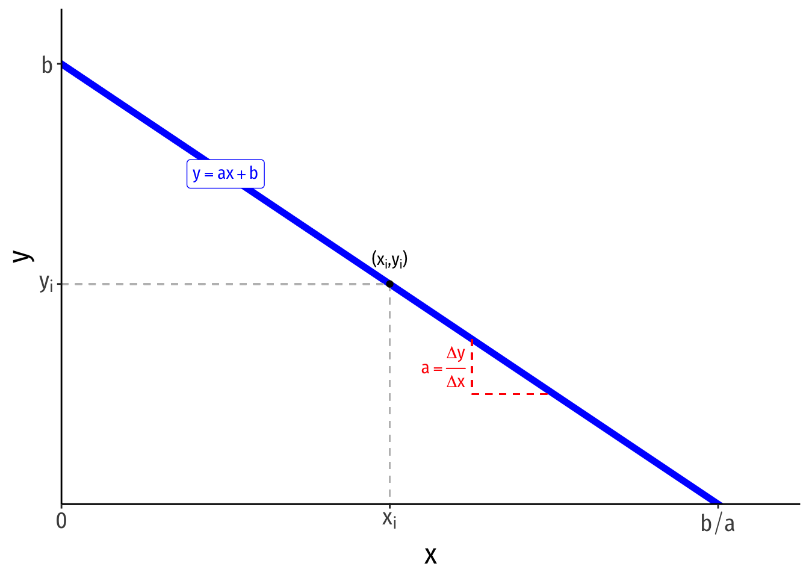
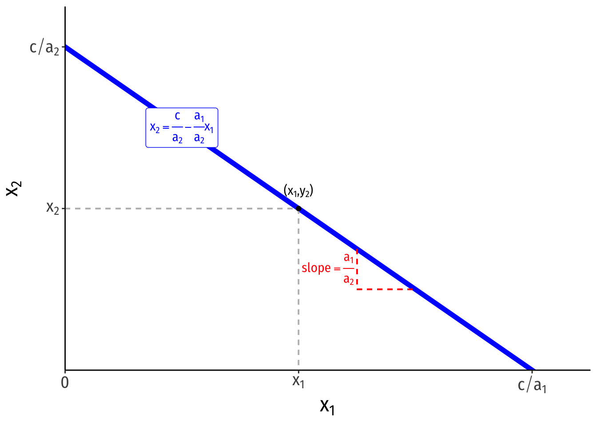
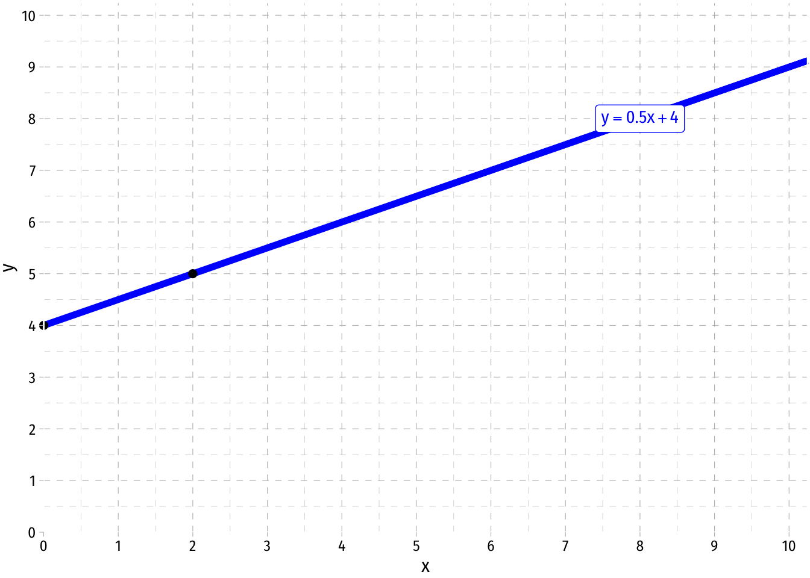
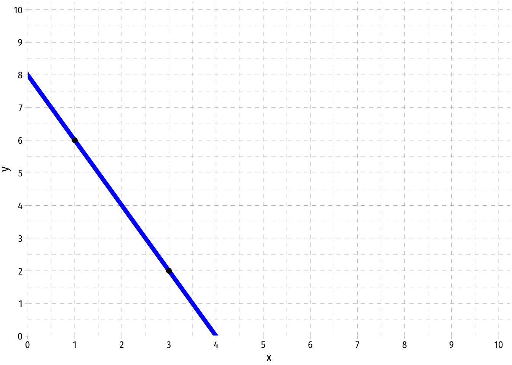

Graphing Linear Equations
Slope-Intercept Form

- A linear function of two variables can be written in slope-intercept form: \[y=ax+b\]
- \(y\) is the dependent variable (on the vertical axis)
- \(x\) is the independent variable (on the horizontal axis)
- \(a\) is the slope of the line
- \(a = \frac{\text{rise}}{\text{run}} = \frac{\text{change in }y}{\text{change in }x} = \frac{\Delta x}{\Delta y}\)
- you may have been taught the slope as “\(m\)”, this is just personal taste, but again, get used to using different letters!
- \(b\) is the vertical-intercept, a constant number where the line crosses the vertical axis
- if \(y\) is the dependent variable, this is the “\(y\)-intercept”, \(y\) where \(x=0\)
- Any point on the line has an \(x\)-coordinate and \(y\)-coordinate \((x_i,y_i)\)
Other Forms
- A linear function can equivalently be expressed in the following form: \[a_1x_1+a_2x_2=c\]
- \(x_2\) is the dependent variable (on the vertical axis)
- \(x_1\) is the independent variable (on the horizontal axis)
- \(c\) is a constant
- This is a valid equation, but is difficult to visualize in the traditional graph as above. Simply solve for the dependent variable on the vertical axis \((x_2\) as if you were solving for \(y)\):

\[\begin{align*} a_1x_1+a_2x_2=c && \text{Original}\\ a_2x_2=c-a_1x_1 && \text{Subtracting }x_1 \text{ term}\\ x_2 = \frac{c}{a_2}-\frac{a_1}{a_2}x_1 && \text{Dividing by }a_2 \\ \end{align*}\]
The vertical intercept is \(\frac{c}{a_2}\)
The horizontal intercept is \(\frac{c}{a_1}\)
The slope is \(-\frac{a_1}{a_2}\)
This is extremely useful for dealing with constraints in constrained optimization problems: budget constraints and isocost lines
Drawing a Graph From an Equation
If we already have a linear equation that we would like to graph, we can follow these steps:
- Take the equation and plug in two values, e.g. if we have:
\[p = \frac{1}{2}q + 4\]
- We can find two points on the graph. The easiest one to find is the vertical-intercept, where the line crosses the vertical axis, where \(q=0\), so plug in \(q=0\):
\[\begin{align*} p &= \frac{1}{2}(0)+4\\ p &= 4 \\ \end{align*}\]
Thus, one point is \((0,4)\). Note that the constant in the function itself is the \(p-intercept\)! So one valid point will always be \((0,b)\)!
- For our second point, let’s plug in \(q=2\):
\[\begin{align*} p &= \frac{1}{2}(2)+4\\ p &= 5 \\ \end{align*}\]
Thus, another point is \((2,5)\)
- Now, plot the two points on the graph, and connect them with a line

Note: A quick shortcut to plot a line is to find the vertical intercept and plot that, and then find the next point using the slope. Here, start our line at 4 on the vertical axis, and then, as the slope is \(\frac{1}{2}\), for every one unit increase in \(q\), \(p\) increases by \(\frac{1}{2}\). Our second point, (2,5), is a 2 unit increase in \(q\) resulting in a \(1\) unit increase in \(p\).
Finding an Equation from a Graph

In order to find the equation of an existing line, we follow these steps:
- First, take two points on the line and find the slope, \(a\), between them. Let’s pick \((1,6)\) and \((3,2)\).
\[\begin{align*} \text{Slope} &= \frac{rise}{run} \\ &= \frac{(p_2-p_1)}{(q_2-q_1)}\\ &= \frac{(2-6)}{(3-1)}\\ &= \frac{-4}{2}\\ &= -2\\ \end{align*}\]
There is a shortcut that we can use to find the slope faster by eye-balling the graph: When \(q\) changes by 1, how many units does \(p\) change? If we move from (1,6) to (2,5), \(q\) increases by 1, but \(p\) falls by 2. So the slope is \(-2\). For every one unit increase in \(q\), \(p\) changes by -2.
- Now with the slope, we need to find the vertical intercept, or \(b\), we solve this by plugging in the slope and any point on the graph, we will use (1,6):
\[\begin{align*} p &= aq+b\\ (6) &= -2(1)+b\\ 6 &= -2+b\\ 8 &= b\\ \end{align*}\]
Note, there is another easy way to eye-ball what this value is. It is simply that \(p\) value where \(q=0\), or at what \(p\) value the graph crosses the vertical axis. We can see it is at 8.
- Thus, we have the slope and the intercept, so our equation is: \[ p = -2q+8 \]